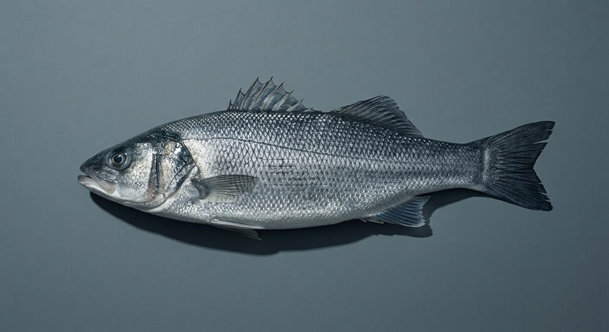
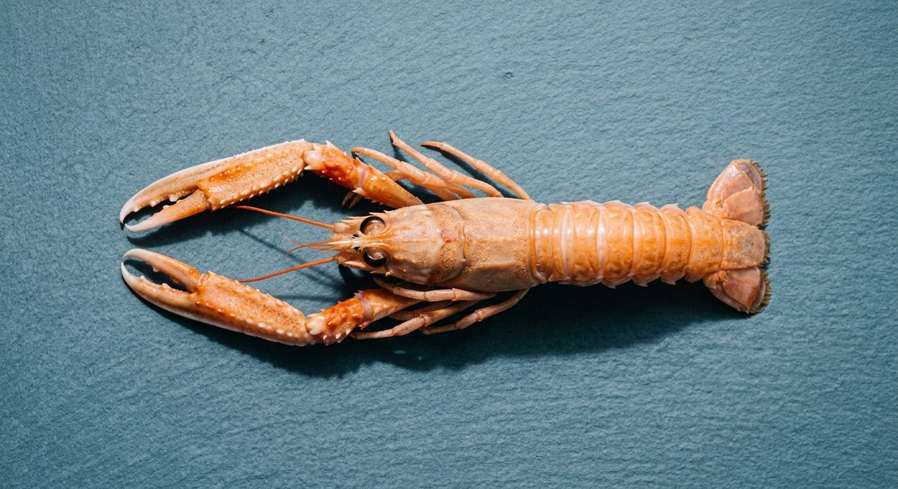
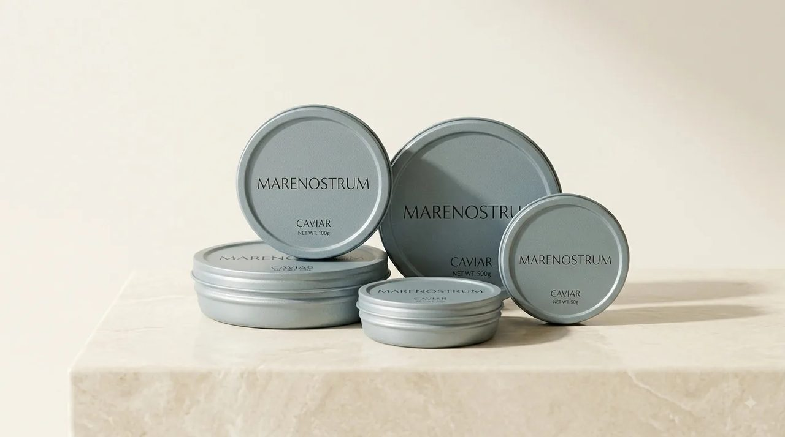

La Table
Deux univers,
une même exigence
Le Caviar et La Mer. Aucun prix affiché : chaque pièce se découvre, puis s'obtient sur demande d'allocation.
Univers
Le Caviar

Univers
La Mer



Ouverture prochaine
Terrines & conserves
Texture dense, travaillée pour tenir en tranche.
Découvrir →Accès à la collection
Cette présentation n'est pas exhaustive. Traçabilité, conditionnement et détail technique : fiche technique produit.
Demander une allocation →